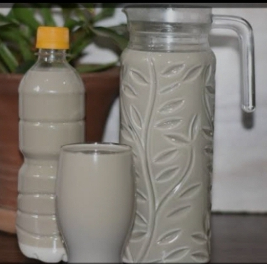

My creamy Kunu drink

Kunu with milk to make it creamier and rich
Kunu is a popular Hausa drink made from millet or sorghum flour, similar to tigernut drink,the milk adds a creamy touch.
Ingredients:
- 2 cups of millet or sorghum flour
- 4 cups of water
- 1/4 teaspoon of ginger powder
- 1/4 teaspoon of cinnamon powder
- 1/4 teaspoon of cloves powder
- 1/2 teaspoon paprika
- 1/2 teaspoon of sugar and milk (optional)
/ul>
Procedure
- In a large bowl, mix the millet or sorghum flour with a small amount of water to form a smooth paste.
- Gradually add more water to the paste, stirring continuously to avoid lumps.
- Bring the mixture to a boil, then reduce heat and simmer for 10-15 minutes or until the mixture thickens..
- Remove from heat and add the ginger, cinnamon, and cloves powder. Stir well..
- If desired, add sugar and milk to taste and also give more creamier taste.
- Strain the mixture through a cheesecloth or fine-mesh sieve into a bowl..
- Chill the Kunu in the refrigerator for at least 2 hours.
Serve Kunu cold, garnished with squeeze lemon to give unique flavour